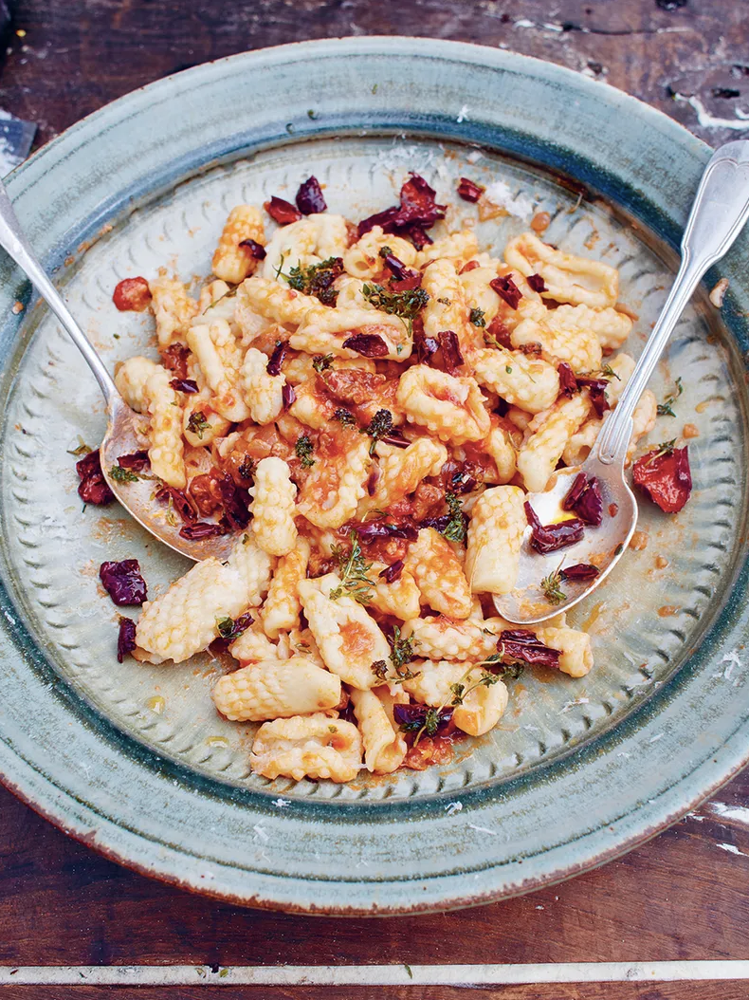

GET HOME
Sausage Cavatelli
SWEET & SPICY THYME-SPIKED CHILLI PEPPERS

“Cavatelli means ‘little hollows’, but I also like to think of this dish as ‘porcospino’ (porcupine) pasta! It’s easy and wonderful, handmade with a bit of love, and inspired by the spicy pasta Nonna Teresa made for me. ”
SERVES: 4 People
COOKS: IN1 HOUR 25 MINUTES
DIFFICULTY: NOT TOO TRICKY
Ingredients:
- 400 g durum wheat flour , or fine semolina flour, plus extra for dusting
- olive oil
- 1 dried red chilli
- 1 dried red pepper , (see tip) or 1 teaspoon sweet paprika
- ½ a bunch of fresh thyme , (15g)
- 1 large higher-welfare quality spicy sausage , (125g)
- 1 red onion
- 2 cloves of garlic
- 125 ml southern Italian white wine
- 1 x 400 g tin of quality plum tomatoes
- 40 g pecorino , or Parmesan cheese
Method:
- Pile the flour on to a clean surface and make a well in the middle. Gradually add 200ml of warm water, using a fork to bring the flour in from the outside until it forms a dough. Knead on a flour-dusted surface for 10 minutes, or until smooth and elastic. Cut the dough into four so you can work with it a quarter at a time. Cover the rest with a clean damp tea towel while you work, to stop it drying out. Roll your first quarter into a long sausage shape about 1cm in diameter, then cut it into 2cm chunks. Lightly flour the back of a fine grater, gently squash a chunk of dough against it with your thumb, then roll it off to create a nubbly, textured shape. Place on a semolina-dusted tray and repeat – you’ll get the knack.
- Place a large frying pan on a medium heat with 3 tablespoons of oil. Remove the stalks and seeds from the chilli and pepper, tear into flakes and add to the pan. Strip in the thyme leaves and fry for 30 seconds, or until crisp, then spoon out and save for later, leaving the pan on the heat. Squeeze the sausagemeat out of the skin into the pan and mash it up. Peel, finely chop and add the onion and garlic (and the paprika, if using), then fry gently for 15 minutes, or until soft, stirring occasionally. Add the wine, cook away, then mash in the tomatoes. Season and simmer for 15 minutes.
- Cook the pasta in a pan of boiling salted water for 4 minutes, or until tender, then drain, reserving a mugful of starchy cooking water. Toss with the sauce, finely grate over most of the pecorino and toss again, loosening with a splash of reserved cooking water, if needed. Sprinkle over the chilli pepper mix and finely grate over the remaining pecorino, to finish.
Tips:
To make the dried pepper, preheat the oven to 100ºC/210ºF/gas ¼. Drain a 600g jar of roasted red peppers, pat dry with kitchen paper, rub with a little oil, tear in half, then lay on a tray lined with greaseproof paper. Leave to dry out in the oven for 4 hours, then remove.